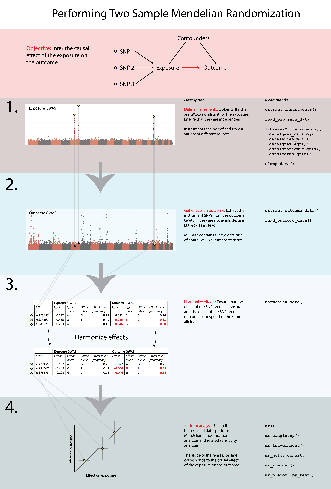

18 Two Sample Mendelian Randomisation
So you took the hard way. You want to get your hands dirty yourself. Your choice.
As I wrote, we will use the TwoSampleMR package to assess the causal effect of type 2 diabetes on coronary artery disease and ischemic stroke.
Briefly, the workflow of a Two-Sample MR is as follows (see also diagram below):
- Select instruments for the exposure (perform LD clumping if necessary)
- Extract the instruments from the MR Base GWAS database for the outcomes of interest
- Harmonise the effect sizes for the instruments on the exposures and the outcomes to be each for the same reference allele
- Perform MR analysis, sensitivity analyses, create plots, compile reports

18.1 Loading the package
TwoSampleMR is free use. It used to require server-authentication using a gmail-account, now it doesn’t anymore. Should run into an issue, please refer to this page.
First we load the package.
18.3 Instruments
The MRInstruments-package, which comes with TwoSampleMR, includes several types of instruments:
- gwas_catalog, which includes data from GWAS collected by the GWAS Catalog
- metab_qtls, all known quantitative trait loci (meQTLs) associated to circulating metabolites
- proteomic_qtls, all known protein QTLs (pQTLs) associated to circulating protein levels
- gtex_eqtl, all known expression QTLs (eQTLs) associated to gene expression in 53 different tissues from GTEx Portal
- aries_mqtl, all known methylation QTLs (mQTLs) associated to DNA methylation in blood from ARIES
Let’s select T2D associated instruments.
18.4 Clumping
Like with identifying independent GWAS hits, it is important for TwoSampleMR to ensure that the instruments for the exposure are independent. We can use MR Base to perform clumping. The European samples from the 1000 genomes project are used to estimate LD between SNPs. You can provide a list of SNP IDs, the SNPs will be extracted from 1000 genomes data, LD calculated between them, and amongst those SNPs that have LD R-square above the specified threshold only the SNP with the lowest P-value will be retained. To do this, use the following command.
18.5 Outcomes
Right, so now we are ready to select the proper outcome, CAD. There are multiple datasets available in MRBase, the database used by TwoSampleMR. Let’s review them all and select one with the largest overlap with our exposure SNPs.
## Rows: 31
## Columns: 25
## $ id <chr> "ukb-e-I25_CSA", "ukb-e-I25_AFR", "ukb-d-I9_IHD", "ukb-d-…
## $ trait <chr> "I25 Chronic ischaemic heart disease", "I25 Chronic ischa…
## $ group_name <chr> "public", "public", "public", "public", "public", "public…
## $ year <int> 2020, 2020, 2018, 2018, 2018, 2018, 2018, 2018, 2018, 201…
## $ author <chr> "Pan-UKB team", "Pan-UKB team", "Neale lab", "Neale lab",…
## $ sex <chr> "Males and Females", "Males and Females", "Males and Fema…
## $ population <chr> "South Asian", "African American or Afro-Caribbean", "Eur…
## $ unit <chr> "NA", "NA", "NA", "NA", "NA", "SD", "SD", "SD", "SD", "SD…
## $ sample_size <int> 8876, 6636, 361194, 361194, 361194, 463010, 463010, 46301…
## $ build <chr> "HG19/GRCh37", "HG19/GRCh37", "HG19/GRCh37", "HG19/GRCh37…
## $ subcategory <chr> "NA", "NA", "NA", "NA", "NA", "NA", "NA", "NA", "NA", "NA…
## $ category <chr> "Binary", "Binary", "Binary", "Binary", "Binary", "Binary…
## $ ontology <chr> "NA", "NA", "NA", "NA", "NA", "NA", "NA", "NA", "NA", "NA…
## $ doi <chr> NA, NA, NA, NA, NA, NA, NA, NA, NA, NA, NA, NA, NA, NA, N…
## $ note <chr> "NA", "NA", "NA", "NA", "NA", "41204#I259: Output from GW…
## $ ncase <int> 1205, 302, 20857, 10157, 10157, 5861, 5771, 9330, 1195, 5…
## $ ncontrol <int> 7671, 6334, 340337, 351037, 351037, 457149, 457239, 45368…
## $ consortium <chr> "NA", "NA", "NA", "NA", "NA", "MRC-IEU", "MRC-IEU", "MRC-…
## $ mr <int> 1, 1, 1, 1, 1, 1, 1, 1, 1, 1, 1, 1, 1, 1, 1, 1, 1, 1, 1, …
## $ pmid <int> NA, NA, NA, NA, NA, NA, NA, NA, NA, NA, NA, NA, 26343387,…
## $ nsnp <int> 9811287, 15478580, 13586589, 13295130, 13295130, 9851867,…
## $ coverage <chr> NA, NA, NA, NA, NA, NA, NA, NA, NA, NA, NA, NA, NA, NA, N…
## $ study_design <chr> NA, NA, NA, NA, NA, NA, NA, NA, NA, NA, NA, NA, NA, NA, N…
## $ priority <int> 0, 0, 0, 0, 0, 1, 1, 1, 1, 1, 1, 1, 1, 2, 1, 3, 0, 0, 0, …
## $ sd <dbl> NA, NA, NA, NA, NA, NA, NA, NA, NA, NA, NA, NA, NA, NA, N…It turns out there are several options listed below.
| Code | Year | Author | Description | Ncases | Ncontrols |
|---|---|---|---|---|---|
| ukb-d-I9_IHD | 2018 | Neale Labe | Ischaemic heart disease, wide definition | 20857 | 340337 |
| ukb-d-I9_CHD_NOREV | 2018 | Neale Labe | Major coronary heart disease event excluding revascularizations 10157 351037 | ||
| ieu-a-7 | 2015 | Nikpay et al. | Coronary artery disease | 60801 123504 | |
| ieu-a-9 | 2013 | Deloukas et al. | Coronary artery disease | 63746 130681 | |
| ieu-a-8 | 2011 | Schunkert et al. | Coronary artery disease | 22233 | 64762 |
We will use the ieu-a-7 dataset as this provides the latest and the greatest, but at the same time (when you go into the literature and dig up the publication) you need a good and sharp definition of the outcome you are interested in.
chd_out_dat <- extract_outcome_data(
snps = t2d_exp_dat$SNP,
# outcomes = "UKB-a:534" # - this one is deprecated, use the one below
# Deprecated IDs being used? Detected numeric IDs. Trying to fix, but please note the changes below for future.
# UKB-a:534 -> ukb-a-534
outcomes = "ieu-a-7"
)18.5.1 Harmonisation
It is important to make sure that the effect allele associated to T2D of any given SNP is the same as the effect allele associated CAD. In other words, we need to harmonise the data.
18.5.2 Mendelian randomisation
Now that the data is harmonised, we are ready to perform a MR and test for a causal relation of T2D with CAD.
res <- mr(dat)
DT::datatable(res, caption = "MR of type 2 diabetes and coronary artery disease", rownames = FALSE)Question: What is the causal effect of T2D on CAD? Can you describe this using the knowledge from the lecture and the results in the table.
Several tests are applied. You can change the method(s) applied by using the method_list flag. Below a list of available methods.
| obj | name | PubmedID | Description | use_by_default | heterogeneity_test |
|---|---|---|---|---|---|
| mr_wald_ratio | Wald ratio | TRUE | FALSE | ||
| mr_two_sample_ml | Maximum likelihood | FALSE | TRUE | ||
| mr_egger_regression | MR Egger | 26050253 | TRUE | TRUE | |
| mr_egger_regression_bootstrap | MR Egger (bootstrap) | 26050253 | FALSE | FALSE | |
| mr_simple_median | Simple median | FALSE | FALSE | ||
| mr_weighted_median | Weighted median | TRUE | FALSE | ||
| mr_penalised_weighted_median | Penalised weighted median | FALSE | FALSE | ||
| mr_ivw | Inverse variance weighted | TRUE | TRUE | ||
| mr_ivw_radial | IVW radial | FALSE | TRUE | ||
| mr_ivw_mre | Inverse variance weighted (multiplicative random effects) | FALSE | FALSE | ||
| mr_ivw_fe | Inverse variance weighted (fixed effects) | FALSE | FALSE | ||
| mr_simple_mode | Simple mode | TRUE | FALSE | ||
| mr_weighted_mode | Weighted mode | TRUE | FALSE | ||
| mr_weighted_mode_nome | Weighted mode (NOME) | FALSE | FALSE | ||
| mr_simple_mode_nome | Simple mode (NOME) | FALSE | FALSE | ||
| mr_raps | Robust adjusted profile score (RAPS) | FALSE | FALSE | ||
| mr_sign | Sign concordance test | Tests for concordance of signs between exposure and outcome | FALSE | FALSE | |
| mr_uwr | Unweighted regression | Doesn’t use any weights | FALSE | TRUE |
18.5.3 Heterogeneity & Pleiotropy
Many genetic variants are associated to multiple traits, thus pleiotropy is common and widespread in the human genome. This poses as an issue to tease apart causal relations in Mendelian randomisation. Vertical pleiotropy arises because a SNP influences one trait, which in turn influences another. We can use MR to estimate the causal influence between the traits. Horizontal pleiotropy arises due to SNPs influencing two traits through independent pathways(Hemani G. 2018).
Further, we should test for study heterogeneity.
## id.exposure id.outcome outcome exposure
## 1 24wk7G ieu-a-7 Coronary heart disease || id:ieu-a-7 Type 2 diabetes
## 2 24wk7G ieu-a-7 Coronary heart disease || id:ieu-a-7 Type 2 diabetes
## method Q Q_df Q_pval
## 1 MR Egger 82.1911 48 0.001545015
## 2 Inverse variance weighted 84.2921 49 0.001282616## id.exposure id.outcome outcome exposure
## 1 24wk7G ieu-a-7 Coronary heart disease || id:ieu-a-7 Type 2 diabetes
## egger_intercept se pval
## 1 0.004478786 0.004043328 0.2735122Question: What do the results of the heterogeneity and pleiotropy tests tell you?
18.5.4 Leave-one-out
It is also key to inspect the causal effects per SNP and perform a leave-one-out analysis.
res_single <- mr_singlesnp(dat)
DT::datatable(res_single, caption = "Single SNP MR analysis", rownames = FALSE)res_loo <- mr_leaveoneout(dat)
DT::datatable(res_loo, caption = "Leave-one-out MR analysis", rownames = FALSE)Question: What do the results of the single SNP and leave-one-out analyses tell you?
18.5.5 Visualisation
It is important to present the causal inference graphically.
Scatter plot
## $`24wk7G.ieu-a-7`
##
## attr(,"split_type")
## [1] "data.frame"
## attr(,"split_labels")
## id.exposure id.outcome
## 1 24wk7G ieu-a-7Question: What do you see in the scatter plot? And what can you conclude from this?
Single SNP plot
## $`24wk7G.ieu-a-7`
##
## attr(,"split_type")
## [1] "data.frame"
## attr(,"split_labels")
## id.exposure id.outcome
## 1 24wk7G ieu-a-7Question: What do you see in the forest plot? And what can you conclude from this?
Leave-One-Out plot
## $`24wk7G.ieu-a-7`
##
## attr(,"split_type")
## [1] "data.frame"
## attr(,"split_labels")
## id.exposure id.outcome
## 1 24wk7G ieu-a-7Question: what does a leave-one-out ploy tell you? And what can you conclude from this?
Funnel plot
## $`24wk7G.ieu-a-7`
##
## attr(,"split_type")
## [1] "data.frame"
## attr(,"split_labels")
## id.exposure id.outcome
## 1 24wk7G ieu-a-7Question: Why would yoy use a funnel plot? And what can it tell you?
Question: What are your main conclusions from the MR analysis?